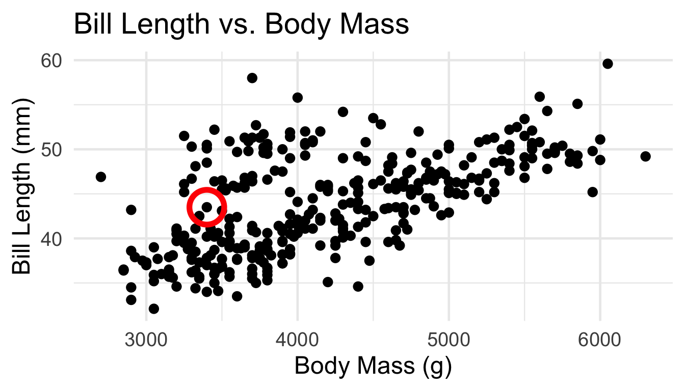
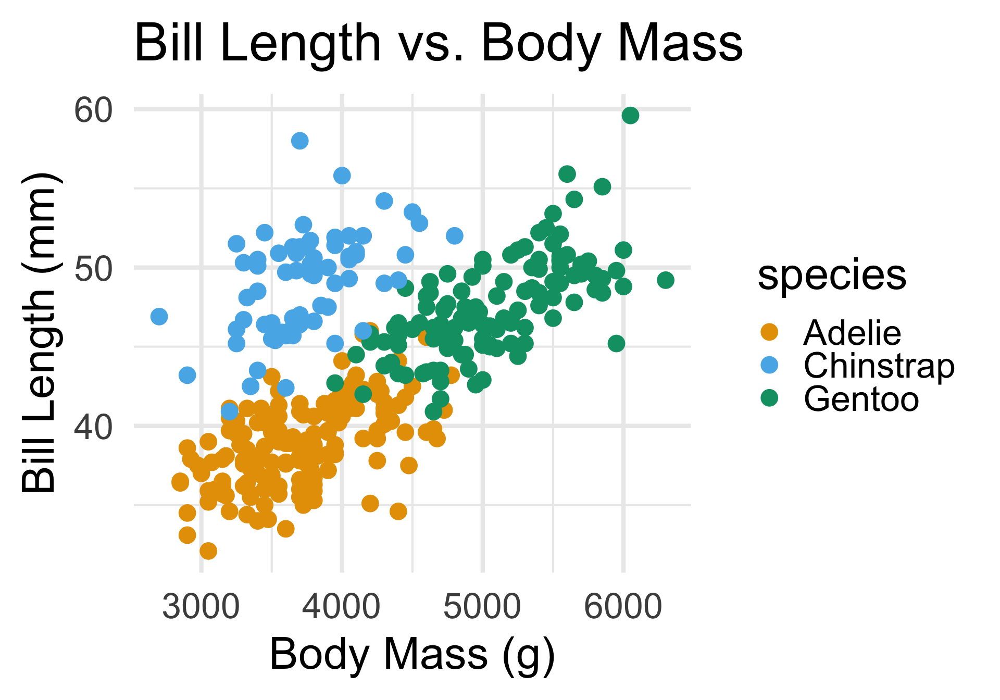

PSTAT 100: Lecture 19
Clustering; Introduction to Missing Data
Department of Statistics and Applied Probability; UCSB
Summer Session A, 2025
\[ \newcommand\R{\mathbb{R}} \newcommand{\N}{\mathbb{N}} \newcommand{\E}{\mathbb{E}} \newcommand{\Prob}{\mathbb{P}} \newcommand{\F}{\mathcal{F}} \newcommand{\1}{1\!\!1} \newcommand{\comp}[1]{#1^{\complement}} \newcommand{\Var}{\mathrm{Var}} \newcommand{\SD}{\mathrm{SD}} \newcommand{\vect}[1]{\vec{\boldsymbol{#1}}} \newcommand{\tvect}[1]{\vec{\boldsymbol{#1}}^{\mathsf{T}}} \newcommand{\hvect}[1]{\widehat{\boldsymbol{#1}}} \newcommand{\mat}[1]{\mathbf{#1}} \newcommand{\tmat}[1]{\mathbf{#1}^{\mathsf{T}}} \newcommand{\Cov}{\mathrm{Cov}} \DeclareMathOperator*{\argmin}{\mathrm{arg} \ \min} \newcommand{\iid}{\stackrel{\mathrm{i.i.d.}}{\sim}} \]
Congrats!
Congrats on finishing the last ICA!
Grades will be released shortly after lecture today - allow me to say a few words.
Also, looking forward: please don’t forget to continue to work on your Final Projects!
Supervised Vs. Unspervised Learning
Though I haven’t made explicit mention about this yet, there exists a broad division of statistical learning into supervised and unsupervised learning.
Supervised learning is where we have a response variable, whose relationship with one or more covariates we are trying to learn (hence the name statistical “learning”)
- Kernel Density Estimation, Regression, Classification, are both examples of supervised learning
However, there are some situations in which we don’t have a response variable, and we are primarily interested in summarising or understanding our data. This is the setting of unsupervised learning.
- One of the primary concepts from Week 2 of this course falls under this category - can anyone remind me what that concept is?
Clustering vs. Classification
The first topic of today’s lecture, clustering, is the unsupervised analog of classification.
As an example, consider the following scatterplot of penguins Bill Lengths plotted against their Body Mass:
- Here’s a question: how many “groups” (clusters) of points do you see?
- Note that I’m not asking about the relationship between any two variables!
Clustering
By eye, it looks like there are potentially two main clusters.
But the boundaries between these clusters are perhaps a bit “fuzzy”.
For example, which group should the circled point belong to?

Clustering
- Essentially, the goal of clustering is to uncover patterns of “similarities” within the data.
- Such similarities can go a long way in interpreting and summarizing a given dataset.
Question
Given p variables, can we classify observations into two or more groups?
Clustering Techniques seek to address this very question.
Now, to be clear, we are not making any impositions about whether or not true subpopulations exist.
It is possible that there exist subpopulations, like with the penguins dataset:
Clustering
Subpopulations or Not

In this problem, there just so happened to exist three subpopulations in our data, and that this was what was driving our observations about clusters.
But clustering works just as well when there aren’t natural subpopulations in the data.
- For illustrative purposes, let’s stick with the penguins dataset and increase the number of variables we consider.
Penguins, Revisited
penguins_num <- penguins %>% select(where(is.numeric))
penguins_num <- penguins_num[penguins_num %>% complete.cases(), ]
penguins_num %>% head() %>% pander()| bill_length_mm | bill_depth_mm | flipper_length_mm | body_mass_g |
|---|---|---|---|
| 39.1 | 18.7 | 181 | 3750 |
| 39.5 | 17.4 | 186 | 3800 |
| 40.3 | 18 | 195 | 3250 |
| 36.7 | 19.3 | 193 | 3450 |
| 39.3 | 20.6 | 190 | 3650 |
| 38.9 | 17.8 | 181 | 3625 |
Penguins, Revisited
PCA

Even when there exist subpopulations, our clusters may not always reflect them (particularly if two or more subpopulations are very similar to one another).
In this way, we can perhaps think of clustering as identifying “inherent subpopulations” (like PCA uncovers “inherent dimensionality”)
Votes, Revisited
| Rep | Party | State | H. R. 788 | S. J. Res. 38 | H. J. Res. 98 | H. R. 6918 | H. R. 6914 | H. R. 5585 | H. R. 6678 | H. R. 6679 | H. R. 6976 | H. R. 485 | H. R. 7176 | H. R. 7511 | H. R. 2799 | H. R. 6276 | H. R. 1121 | H. R. 6009 | H. R. 7023 | H. R. 1023 | H. R. 7888 | H. R. 4639 | H. R. 6046 | H. R. 4691 | H. R. 5947 | H. R. 6323 | H. R. 8038 | H. R. 8036 | H. R. 8035 | H. R. 8034 | H. R. 529 | H. R. 3397 | H. R. 615 | H. R. 764 | H. R. 3195 | H. R. 6090 | H. R. 6285 | H. R. 6192 | H. J. Res. 109 | H. R. 2925 | H. R. 7109 | H. R. 7530 | H. R. 7581 | H. R. 7343 | H. R. 354 | H. R. 8146 | H. R. 8369 | H. R. 4763 | H. R. 5403 | H. R. 192 |
|---|---|---|---|---|---|---|---|---|---|---|---|---|---|---|---|---|---|---|---|---|---|---|---|---|---|---|---|---|---|---|---|---|---|---|---|---|---|---|---|---|---|---|---|---|---|---|---|---|---|---|
| Adams | Democratic | North Carolina | 0 | 0 | 0 | 0 | 0 | 0 | 0 | 1 | 0 | 0 | 0 | 0 | 0 | 0 | 0 | 0 | 0 | 0 | 1 | 1 | 0 | 0 | 0 | 0 | 1 | 1 | 1 | 1 | 0 | 0 | 0 | 0 | 0 | 1 | 0 | 0 | 0 | 0 | 0 | 0 | 1 | 0 | 0 | 0 | 0 | 0 | 0 | 0 |
| Aderholt | Republican | Alabama | 1 | 1 | 1 | 1 | 1 | 1 | 1 | 1 | 1 | 1 | 1 | 1 | 1 | 1 | 1 | 1 | 1 | 1 | 1 | 0 | 1 | 1 | 1 | 1 | 1 | 1 | 1 | 1 | 1 | 1 | 1 | 1 | 1 | 1 | 1 | 1 | 1 | 1 | 1 | 1 | 1 | 1 | 1 | 1 | 1 | 1 | 1 | 1 |
| Aguilar | Democratic | California | 0 | 0 | 0 | 0 | 0 | 0 | 0 | 1 | 0 | 0 | 0 | 0 | 0 | 0 | 0 | 0 | 0 | 0 | 1 | 0 | 0 | 0 | 0 | 0 | 1 | 1 | 1 | 1 | 1 | 0 | 0 | 0 | 0 | 1 | 0 | 0 | 0 | 0 | 0 | 0 | 1 | 0 | 0 | 0 | 0 | 1 | 0 | 0 |
| Alford | Republican | Missouri | 1 | 1 | 1 | 1 | 1 | 1 | 1 | 1 | 1 | 1 | 1 | 1 | 1 | 1 | 1 | 1 | 1 | 1 | 0 | 1 | 1 | 1 | 1 | 1 | 1 | 1 | 0 | 1 | 1 | 1 | 1 | 1 | 1 | 1 | 1 | 1 | 1 | 1 | 1 | 1 | 1 | 1 | 1 | 1 | 1 | 1 | 1 | 1 |
| Allen | Republican | Georgia | 1 | 1 | 1 | 1 | 1 | 1 | 1 | 1 | 1 | 1 | 1 | 1 | 1 | 1 | 1 | 1 | 1 | 1 | 1 | 1 | 1 | 1 | 1 | 1 | 1 | 1 | 0 | 1 | 1 | 1 | 1 | 1 | 1 | 1 | 1 | 1 | 1 | 1 | 1 | 1 | 1 | 1 | 1 | 1 | 1 | 1 | 1 | 1 |
| Allred | Democratic | Texas | 0 | 0 | 0 | 0 | 0 | 1 | 1 | 1 | 1 | 0 | 0 | 1 | 0 | 0 | 1 | 0 | 0 | 0 | 1 | 0 | 1 | 0 | 0 | 0 | 1 | 1 | 1 | 1 | 1 | 0 | 0 | 0 | 0 | 1 | 0 | 0 | 0 | 0 | 0 | 0 | 1 | 1 | 1 | 1 | 0 | 1 | 0 | 1 |
Votes, Revisited
- How many clusters? Two? Three?
Votes, Revisited
Clustering
- Let’s say we believe there to be two clusters in our data.
- Even with that determination, there is still the question of where to place our cluster boundaries.
- So, let’s discuss some techniques for setting those.
K-Means Clustering
- One of the most widely-known clustering techniques is that of K-means.
Identify the cluster centroids by minimizing the variance within each cluster

Identify the cluster assignments by finding the shortest Euclidean distance to a centroid
K-Means Clustering
Optimization Problem
- Let Ci denote the indicies of points in cluster i, for i = 1, …, K, such that:
- \(\bigcup_{i=1}^{K} C_i = \{1, \cdots, n\}\) (each observation belongs to at least one of the K clusters)
- \(C_i \cap C_j = \varnothing\) for all \(i \neq j\) (clusters do not overlap)
- A “good” clustering is one for which the within-cluster variation is as small as possible.
\[\min_{C_1, \cdots, C_K} \left\{ \sum_{k=1}^{K} \frac{1}{|C_k|} \sum_{i, i' \in C_k} \sum_{j=1}^{p} (x_{ij} - x_{i' j})^2 \right\}\]
K-Means Clustering
Optimization Problem
This optimization problem is, in general, intractable.
Thankfully, a local solution can be obtained using the following iterative algorithm (called the K-means clustering algorithm)
K-Means Clustering Algorithm
- Start with a random initialization of clusters; i.e. assign a random number from {1, …, K} to each point
- Iterate the following until cluster assignments stop changing:
- For each cluster, compute the cluster centroid
- Assign each observation to the cluster whose centroid is closest (in terms of Euclidean)
- This is iterative because after cluster assignments change, so too do the centroids.
K-Means Clustering
Votes Dataset
Code
set.seed(100) ## for reproducibility
km_votes <- kmeans(votes_num, centers = 2)
prcomp(votes_num, scale. = TRUE)$x[,1:2] %>%
data.frame() %>%
mutate(kmeans_clust = factor(km_votes$cluster)) %>%
ggplot(aes(x = PC1, y = PC2)) +
geom_point(size = 3,
aes(col = kmeans_clust)) +
theme_minimal(base_size = 18) +
ggtitle("PCA Plot of Votes Dataset",
subtitle = "Clustered using K-Means") +
scale_color_okabe_ito() +
labs(col = "Cluster")K-Means Clustering
Votes Dataset
- Since we believe there to be some clustering along party lines, we can cross-tabulate the cluster labels with party labels:
| cluster | Democratic | No data found | Republican |
|---|---|---|---|
| 1 | 207 | 1 | NA |
| 2 | 4 | NA | 216 |
- Interestingly, this reveals that there are four democratic representatives that appear to vote more similarly to republicans than democrats
| Rep | Party | State |
|---|---|---|
| Cuellar | Democratic | Texas |
| Davis (NC) | Democratic | North Carolina |
| Golden (ME) | Democratic | Maine |
| Perez | Democratic | Washington |
K-Means Clustering
Votes Dataset
K-Means Clustering
Votes Dataset
- Also, we can examine the one person whose party affiliation is missing from the original dataset:
This person falls well within our “Democratcic” cluster, meaning they are likely a Democrat.
In this way, we can see that clustering can, in some cases, help us with missing data.
Indeed, perhaps this is a good segue into our next topic for today…
Missing Data
Missing Data
Missing data occurs when one or more variables have observations that are not present.
There are a variety of reasons why data might be missing:
- equipment failure
- non-response bias
- sample corruption
- atrition (participants dropping out)
Missing values are often encoded using a special symbol. In
R, missing values are by default mapped to the symbolNA.Admittedly, missing data is the bane of most data scientists’ existences.
Missing Data
- For example, many functions in
Rbreak down in the presence of missing data
- Some functions have the ability to ignore missing values, often through the specification of an additional argument:
Caution
Simply throwing out missing values is, in some cases, ill-advised.
Missing Data
So how should missing values be handled in practice?
This is a very hot-topic question!
- Indeed, today’s lecture isn’t meant to be a comprehensive guide on handling missingness; rather, I’d encourage you to treat this as an exercise in raising awareness.
- The text Flexible Imputation of Missing Data by Stef Van Buuren provides a great introduction to the topic of handling missing data.
The general idea is that we need to consider the mechanisms behind the missingness.
Missing Data
General Framework
Let \(X = \{x_{ij}\}_{(i, j) = (1, 1)}^{(n, p)}\) denote an \(n \times p\) dataset (i.e. a dataset with n observations on p variables).
Denote by \(q_{ij}\) the probability that element \(x_{ij}\) is missing: \[ q_{ij} := \Prob(x_{ij} \text{ is missing}) \]
There are two main cases to consider: one where data is Missing Completely at Random (MCAR) and on where data is Missing at Random (MAR).
Missing Data
MCAR vs MAR
- If data is MCAR, then \(q_{ij}\) is fixed across all i and j.
- That is, every element in X has an equal chance of being missing.
- This implies that the cause of missingness is unrelated to the data.
- As such, missing values can be safely ignored.
- If data is MAR, then \(q_{ij}\) is some function of observed data: \(q_{ij} = f(\vec{\boldsymbol{x}}_{i})\).
- Now, the cause of missingness is related to the data, and simply ignoring missing values can lead to potentially biased results.
- It is, however, possible to estimate the probabilities \(q_{ij}\), since they depend only on observed data.
Missing Data
MNAR
We can see that MCAR is perhaps the “best-case” scenario.
With that interpretation, the “worst-case” scenario is when data is Missing Not at Random (MNAR).
If data is MNAR, then the probabilities \(q_{ij}\) depend on both observed values and unobserved values as well: \(q_{ij} = f(z_i, x_{ij})\) for unknown \(z_j\).
- Now, not only is the missigness related to the data (like when data is MNAR), it is impossible to estimate the \(q_{ij}\) as they depend on unobserved quantities.
Unfortunately, there aren’t any formal tests to determine whether data is MCAR, MAR, or MNAR; the best (and only) way to determine the missingness mechanism is to make an informed assumption based on knowledge about the data collection procedure (which is why we started off today by talking about sampling!)
Missing Data
Example
Here is an example to illustrate the difference between some of these mechanisms, adapted from the article What is the difference between missing completely at random and missing at random? by Krishnan Bhaskaran and Liam Smeeth
Suppose we have a dataset containing several patients’ blood pressures.
Some values are missing.
- Indeed, healthy persons are likely going to the doctor less often than, say, eldery persons and people with preexisting conditions, meaning there are more observations from this latter group of people.
- In fact, it is very likely that, on average, blood pressures are higher in this latter group than in the former group (of healthy individuals).
Missing Data
Example
So, if we looked at an (imaginary) histogram of the missing blood pressure values, this histogram would likely be right-shifted when compared to a histogram of the non-missing values.
If the data were missing MCAR, these two histograms would be the same.
- The histograms are likely not the same, so the data is likely not MCAR.
However, we can explain any differences between the (hypothetical) missing values and the non-missing values using observable quantities (e.g. preexisting health conditions, age, etc.)
- So, the data is likely MAR.
Missing Data
What To Do?
Alright, let’s say we have data that is MCAR or MAR. What do we do?
Again, one option is to simply drop the missing values (e.g. using
tidyr::drop_na(), orcomplete.cases()).- This “works” if data is MCAR, but is risky if data is MAR.
Another option is imputation, which, broadly speaking, refers to the act of trying to “fill in” the missing values in some way.
- If data is MAR or MNAR, this will often induce bias, so, again, it’s important to assess what type of missingness you believe is present before deciding to impute.
Missing Data
Imputation
One idea is to replace the missing value with the mean/median of the surrounding non-missing values (sometimes called mean imputation).
Another imputation technique is to try and predict the missing value from other recorded values in the dataset (sometimes called model-based imputation).
If data is MCAR or MAR, we can try to explicitly model the probability of missingness, and apply bias corrections (like the inverse probability weighting scheme we saw on Lab 4).
Missing Data
Do’s and Dont’s
Do:
- Start by checking for missing values right after importing your data
- Tabulate the proportion of missing values
- Take steps to determine the missigness mechanisms (MCAR, MAR, or MNAR)
Don’t:
- Rely on software defaults for handling missing values
- Drop missing values if data is not MCAR, or if there is too high a proportion of missing values
Next Time
Tomorrow, we’ll start talking a bit about Neural Networks.
In Lab tomorrow, you’ll get some practice with clustering and missing data.
Reminder: keep working on your projects!

PSTAT 100 - Data Science: Concepts and Analysis, Summer 2025 with Ethan P. Marzban